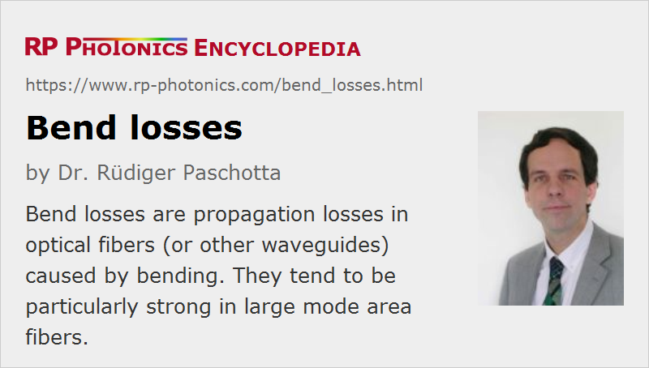

Bend Losses
Definition: propagation losses in an optical fiber (or other waveguide) caused by bending
More general term: propagation losses
German: Biegeverluste
Category: fiber optics and waveguides
How to cite the article; suggest additional literature
Author: Dr. Rüdiger Paschotta
Bend losses are a frequently encountered problem in the context of waveguides, and in particular in fiber optics, since fibers can be easily bent. Bend losses mean that optical fibers exhibit additional propagation losses by coupling light from core modes (guided modes) to cladding modes when they are bent. Typically, these losses rise very quickly once a certain critical bend radius is reached. This critical radius can be very small (a few millimeters) for fibers with robust guiding characteristics (high numerical aperture), whereas it is much larger (often tens of centimeters) for single-mode fibers with large mode areas.
Generally, bend losses increase strongly for longer wavelengths, although the wavelength dependence is often strongly oscillatory due to interference with light reflected at the cladding/coating boundary, and/or at the outer coating surface. The increasing bend losses at longer wavelengths often limit the usable wavelength range of a single-mode fiber. For example, a fiber with a single-mode cut-off wavelength of 800 nm, as is suitable for operation in the 1-μm region, may not be usable at 1500 nm, because they would exhibit excessive bend losses. Note that even without macroscopic bending of a fiber, bend losses can occur as a result of microbends, i.e., microscopic disturbances in the fiber, which can be caused by imperfect fabrication conditions.
In multimode fibers, bend losses are usually strongly mode-dependent. The critical bend radius is typically smaller for higher-order transverse modes. By properly adjusting the bend radius, it is possible to introduce significant losses for higher-order modes without affecting the lowest-order mode. This can be useful e.g. for the design of high-power fiber amplifiers and fiber lasers where a higher effective mode area can be achieved when using a fiber with multiple transverse modes.
The magnitude of bend losses has some dependence on the polarization. This can be exploited, for example, for obtaining stable single-polarization emission from a fiber laser.
Photonic crystal fibers can have very low bend losses even far beyond the single-mode cutoff wavelength. Therefore, they can be “endlessly single-mode”, i.e., they exhibit usable single-mode characteristics over a very large wavelength range.
Note that bending not only introduces losses, but can also reduce the effective mode area. This is particularly true for large mode area step-index fibers. Also, bending induces birefringence [3, 5].
Estimating Bend Losses
For estimating the magnitude of bend loss, the equivalent index method [4] can be used. The basic idea behind this technique is to calculate the mode distributions for an effective index which contains a term accounting for the modified path lengths at different transverse positions. An elasto-optic correction term (taking into account local modifications of the refractive index by mechanical stress) leads to an effectively weaker “tilt” of the refractive index profile than when considering the geometrical effect alone [3, 9].
Such a method of calculating bend losses is convenient and usually a good approximation, provided that there is no light reflected e.g. from the outer cladding surface back to the fiber core. More sophisticated models (see e.g. Ref. [6]) can include such effects, and thus predict the full wavelength dependence, but are complicated to handle.
Bend Losses in Photonic Integrated Circuits
Bend losses are important not only in fiber optics, but also in the context of photonic integrated circuits. Compact circuits designs often require strong bending of waveguides on such chips, but the issue of bend losses often limits the usable radius of curvature. For strong bending and thus particularly compact designs, waveguides with a relatively high numerical aperture, i.e., with a large refractive index contrast, are needed. Those, however, are tentatively more sensitive to propagation losses by scattering at non-perfect boundaries between core and cladding.
Questions and Comments from Users
Here you can submit questions and comments. As far as they get accepted by the author, they will appear above this paragraph together with the author’s answer. The author will decide on acceptance based on certain criteria. Essentially, the issue must be of sufficiently broad interest.
Please do not enter personal data here; we would otherwise delete it soon. (See also our privacy declaration.) If you wish to receive personal feedback or consultancy from the author, please contact him e.g. via e-mail.
By submitting the information, you give your consent to the potential publication of your inputs on our website according to our rules. (If you later retract your consent, we will delete those inputs.) As your inputs are first reviewed by the author, they may be published with some delay.
Bibliography
| [1] | D. Marcuse, “Curvature loss formula for optical fibers”, J. Opt. Soc. Am. 66 (3), 216 (1976), doi:10.1364/JOSA.66.000216 |
| [2] | D. Marcuse, “Field deformation and loss caused by curvature of optical fibers”, J. Opt. Soc. Am. 66 (4), 311 (1976), doi:10.1364/JOSA.66.000311 |
| [3] | R. Ulrich et al., “Bending-induced birefringence in single-mode fibers”, Opt. Lett. 5 (6), 273 (1980), doi:10.1364/OL.5.000273 |
| [4] | D. Marcuse, “Influence of curvature on the losses of doubly clad fibers”, Appl. Opt. 21 (23), 4208 (1982), doi:10.1364/AO.21.004208 |
| [5] | S. J. Garth, “Birefringence in bent single-mode fibers”, IEEE J. Lightwave Technol. 6 (3), 445 (1988), doi:10.1109/50.4022 |
| [6] | L. Faustini and G. Martini, “Bend loss in single-mode fibers”, IEEE J. Lightwave Technol. 15 (4), 671 (1997), doi:10.1109/50.566689 |
| [7] | J. M. Fini, “Bend-resistant design of conventional and microstructure fibers with very large mode area”, “Opt. Express 14 (1), 69 (2006)”, doi:10.1364/OPEX.14.000069 |
| [8] | R. W. Smink et al., “Bending loss in optical fibers – a full-wave approach”, J. Opt. Soc. Am. B 24 (10), 2610 (2007), doi:10.1364/JOSAB.24.002610 |
| [9] | R. T. Schermer, “Improved bend loss formula verified for optical fiber by simulation and experiment”, IEEE J. Quantum Electron. 43 (10), 899 (2007), doi:10.1109/JQE.2007.903364 |
| [10] | R. T. Schermer, “Mode scalability in bent optical fibers”, Opt. Express 15 (24), 15674 (2007), doi:10.1364/OE.15.015674 |
| [11] | A. Argyros et al., “Bend loss in highly multimode fibres”, Opt. Express 16 (23), 18590 (2008), doi:10.1364/OE.16.018590 |
| [12] | J. M. Fini, “Large mode area fibers with asymmetric bend compensation”, Opt. Express 19 (22), 21866 (2011), doi:10.1364/OE.19.021866 |
| [13] | J. M. Fini, “Intuitive modeling of bend distortion in large-mode-area fibers”, Opt. Lett. 32 (12), 1632 (2007), doi:10.1364/OL.32.001632 |
| [14] | C. Schulze et al., “Mode resolved bend loss in few-mode optical fibers”, Opt. Express 21 (3), 3170 (2013), doi:10.1364/OE.21.003170 |
| [15] | R. Paschotta, tutorial on "Passive Fiber Optics", Part 7: Propagation Losses |
| [16] | R. Paschotta, case study on bend losses of a fiber |
See also: waveguides, fibers, single-mode fibers, photonic integrated circuits, propagation losses
and other articles in the category fiber optics and waveguides
|  |
If you like this page, please share the link with your friends and colleagues, e.g. via social media: 


These sharing buttons are implemented in a privacy-friendly way! |
2020-03-20
How can one calculate the total usable wavelength range with single-mode guidance of a fiber – between cutoff wavelength and macro-bending cutoff wavelength of LP01 mode? Is it 500 nm wide?
Answer from the author:
One can calculate it, but not easily, and it depends on the details of fiber design, and of course on the be bend radius and the tolerated level of propagation loss.
Similarly, there is a limit based on microbend losses; for calculating it, you would need to know how strong the irregularities in the fiber are.
Many single-mode fibers should work over a range of some hundreds of nanometers, maybe not always as much as 500 nm.